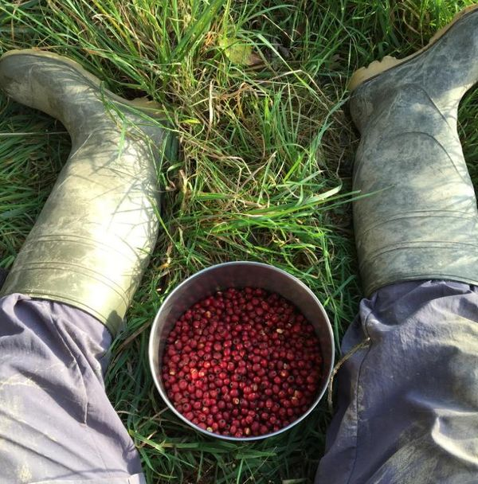

Freelance Food Writer & Farmhand
In addition to writing about food production, I also like to get involved with the people and communities that actually do it. I have been lucky to work in the fields in a number of countries and climates, growing a wide range of delicious produce.
Here are some testimonials from people I've volunteered as a farmhand with.

David is always keen to help and learn, extremely curious and interested in what surrounds him. He wakes up earlier than everyone else and rolls his sleeves up in the paddy field before the sun rises. He contributes to the people and the place by bringing in good vibes, ideas, care, and support.
Zulaika, Malaysia
After just a few days of instruction, David took on the task of looking after our whole farm with all the animals, including cows, sheep, horses, ducks, chickens, and dogs, while we were away. He was an excellent helper who could follow instructions very well, and he understood all of our concerns for our animals.
Iain, Scotland
Having David was a pleasure. We wished it was longer and that we could have given him more opportunities to make delicious things (the onion marmalade is almost empty!). He was very reliable, hands on and focused while working on the farm, and super chill to hangout with in our free time.
Ollie, Bosnia
David's spirit and enthusiasm brought wonderful energy to our space. In the short time he was here, he worked really hard to plant over 300 coffee trees. Everybody was really impressed and we are really grateful for his effort and efficiency.
Karuna, India
David was a great help to us over the summer, willing to do anything. He was our only member of staff and worked well on his own. Fast learner and very good worker, also picking up the local history and attractions very quickly.
Dawn, Scotland
David was always keen to get stuck into any jobs we asked, and he showed plenty of initiative in noticing jobs that needed doing and simply getting on with them.
Kate, France
Dave is a special guy! very gentle, sensible and clever young man that travels with passion, curiosity and respect.
Roberto, Italy
David is hardworking and polite, he gives anything a go and attacks it with gusto!!! He helped us with the olives, gardening, and helping with general things around the farm. A big thank you to David for all your hard work, you really have helped us and made a real difference.
Joanna, Italy